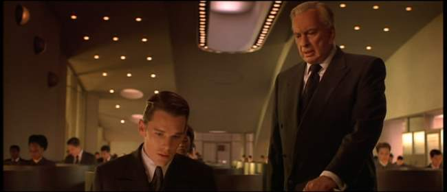
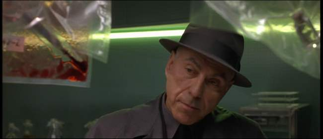
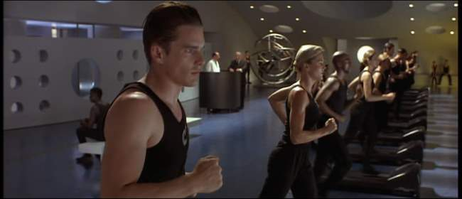
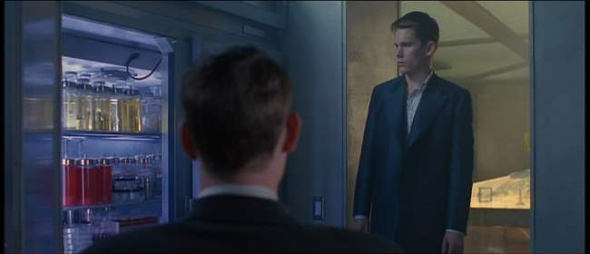
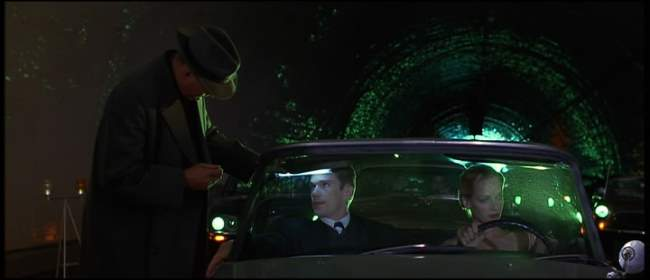
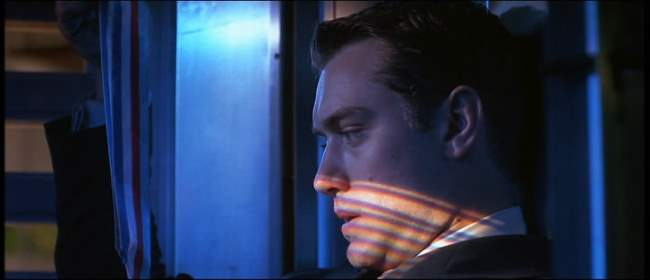
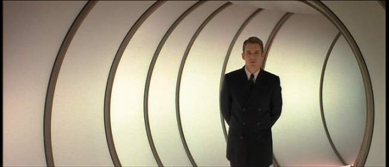

Movie review by : SFAM
Year : 1997
Directed by : Andrew Niccol
Written by : Andrew Niccol
Degree of Cyberpunk visuals : Medium
Correlation to Cyberpunk themes : High
Rating : 8/10
Key cast members :

Overview: Director Andrew Niccol explores the potential horrors of genetic engineering in Gattaca. Originally seen as a flop, taking in only 12 million on a 36 million dollar budget, Gattaca has developed a loyal following from cable and DVD viewings. Whether or not people find this movie enjoyable or believable, virtually everyone agrees that Gattaca is quality film. Viewers will definitely notice a well paced movie that's wonderfully acted in artfully composed scenes.

The Setting: In an unspecified near future time frame, genetic engineering has altered the course of society. Genetic engineering is employed to remove all major defects when conceiving. Upon birth, each new-born baby is given a Genetic Quotient (G.Q.) that details their potential risk areas, including heart issues and susceptibility to diseases. Some couples still ignore the genetic engineering of children and instead go for a "faith birth" ? one where potential defects in the baby are left to chance. Unfortunately, these "faith" children now grow up in a world where their genetic pedigree significantly reduces their opportunities. A surveillance society is now in place where people are divided into having either "valid" and "in-valid" status. Highly sought after jobs are only available to those with "valid" status, while "in-valids" are left to handle the menial tasks of society.

Ethan Hawke plays a flawed "faith birth" named Vincent Freeman who dreams of becoming an astronaut. Vincent is particularly flawed, and is predicted to have a 99% chance of heart failure by age 30. All but the most menial jobs are out of reach for "de-gene-erits" like Vincent, and he is told by both is parents and his genetically engineered brother to lower his expectations. But Vincent decides to defy the odds. Vincent seeks out shady characters in the underclass who put him in contact with wheel chair-bound Jerome (Jude Law), a person with an almost perfect GQ score, who broke his back in a car accident. Jerome agrees to give Vincent urine and blood samples so that he can assume Jerome's identity and bypass the security measures in place at Gattaca, the huge aerospace corporation.

Vincent succeeds in fooling Gattaca personnel with the urine and blood samples, and by almost neurotically ensuring that any genetic tissue of his will not be left behind. He scrubs his body daily to remove excess skin cells or loose hairs, and constantly cleans his office space and keyboard to ensure there is no material left behind other than planted samples from Jerome. Due to his immense personal drive, Vincent quickly climbs the ranks of the organization. He is put on a project to design a year-long flight to one of Saturn's moons.
Vincent's dreams are almost coming true, but just as quickly his dreams are jeopardized when the lead flight director is horribly murdered ? unfortunately the investigation has turned up one of Vincent's "in-valid" eyelashes. Worse, his brother Anton is heading up the investigation. Complicating matters further, Vincent has fallen for a fellow Gattaca employee named Irene (Uma Thurman). Irene's GQ is not good enough for flight, and has accepted her lesser standing in society. Ethan must escape the investigation while still keeping his astronaut and love life dreams alive.
The Acting: Gattaca boasts a terrific cast in which all key roles are wonderfully delivered. Ethan Hawke provides us with a terrific flawed but inspired faith child. Jude Law is just as good as the crippled GQ has-been, and Uma Thurman performs solidly in a supporting role as the love interest who has given up hope for fulfilling her dreams. The rest of the cast is also solid, including Alan Arkin as a beat cop, and William Lee Scott as Vincent's brother. Along with solid pacing, the quality of the acting allow us to overlook some of the more problematic aspects of the story.
The Visuals: Gattaca goes for an understated, high-tech view of the future, where we are only treated to the higher echelons of society. Director Andrew Niccol plays with a number of oppressive color schemes to give us a dystopic vibe. Yellows and blacks are constantly employed, as are dull blue-grays to provide us a sense of hopelessness and inevitability. Greens and sleek, shiny charcoal grays are employed to convey the high-tech nature of society. Niccol and Cinematographer Slawomir Idziak consistently provide us with well composed shots and artistic visuals and set pieces that take in a range of lighting and shadows effects.

Surveillance Society Through Genetic Profiling: The vision of a domineering surveillance society we see in Gattaca may be more relevant now than when it was released in 1997. In thinking through a variety of policy options, the United States is currently debating the trade-offs between public safety and personal privacy. Worse, the technology surrounding our personal genetic code is right around the corner that will give insurance companies information on predilections we have toward certain diseases. It is hardly a stretch to imagine corporations and insurance companies engaging in genetic profiling within the next ten years or so. In that sense, Gattaca cuts to the heart of the issue ? even though percentages may suggest clear issues with the majority of a population, there will still be outliers like Vincent. Gattaca tells us that personal drive can still overcome genetic superiority.

Genetics Is Overplayed: In many ways, Gattaca is a one trick pony in that it examines a world where genetic profiling drives virtually every aspect of society. While the vision is motivating, we are left wondering why extreme advances in genetics don't lead to improvements in medical care. For instance, a prediction upon birth that a heart has a 99% of failure by age 30 is based on an assumption medical treatments will remain static. For the viewer to buy this vision of the future, we must believe that society has given up on the long-standing notion that technology can cure all ills. On a lesser scale, one wonders why a corporation as powerful as the Gattaca Corporation cannot figure a more streamlined method of ensuring the loyalty of their employees ? one wonders who any work is ever done considering the employees seem to spent a significant amount of time verifying their identity and drug free status through the daily gauntlet of surveillance testing.

The Bottom Line: Gattaca is a very well made film that provides us a valuable cautionary tale into how genetic engineering abuses could lead to significant societal maladies. The pacing, acting and cinematography are all of consistently high quality. That said, the world of Gattaca isn't as coherent as I would have liked. We get no sense of the political implications of genetic profiling, nor do we see any innovations other than genetic engineering. In this sense the future setting is perhaps more simplistic than was necessary. Additionally, some of the plot points seem over-contrived. The last week of Vincent's life prior to launch has too much going on (a new love interest, a murder investigation headed up by his brother, issues with Jerome), and there was probably a bit of overkill on the sentimental ending. That said, Gattaca is a great flick, and very much deserves a viewing.